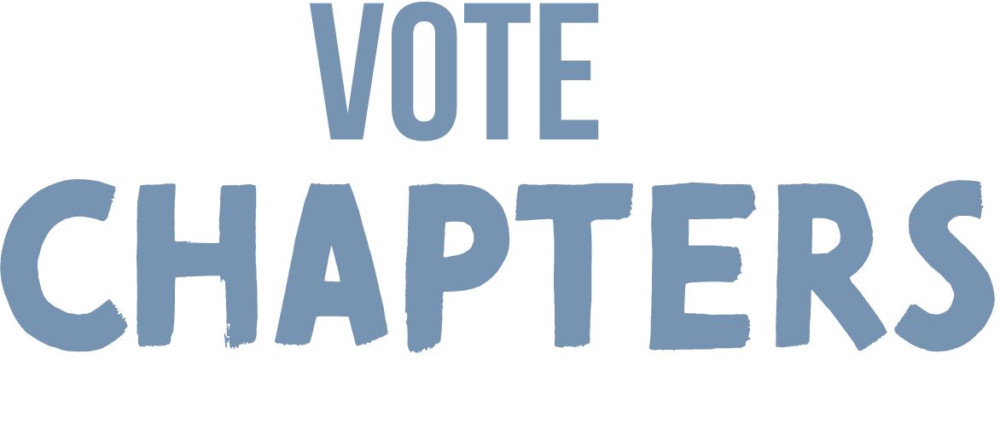

Pray Vote Stand Chapter
Renewing Faith and Reviving Freedom — one community at a time.
The Greater Greenville-Spartanburg SC Pray Vote Stand Chapter equips believers in the Upstate South Carolina community to engage locally, prayerfully, and biblically — helping to revive true freedom in our nation.
We pray for our communities and the leaders who serve them — from city councils and county government to school boards, libraries, and state legislators. We stand for our values at the ballot box and build fellowship with Christians who believe faith belongs in the public square.
Stay up to date with everything our chapter has planned — from tours and prayer gatherings to fellowship lunches and community action events.
View All EventsWe'd love to hear from you. Reach out with questions, to join our mailing list, or to get involved.
Send Us a Message